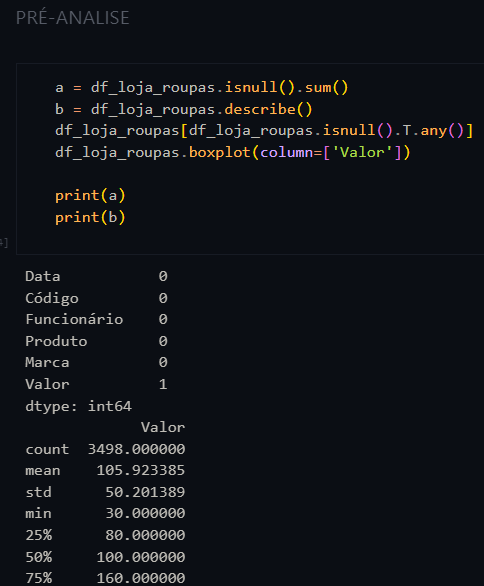
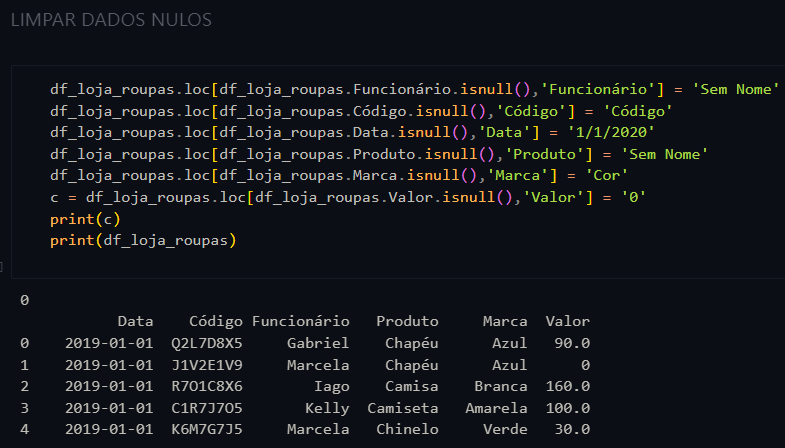
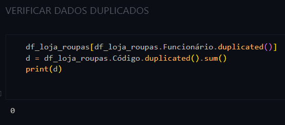
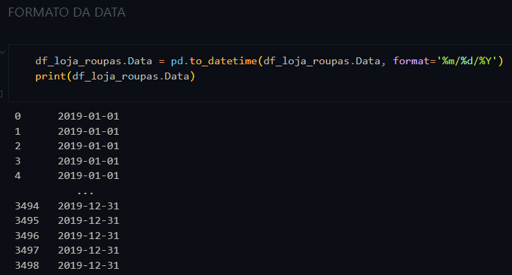
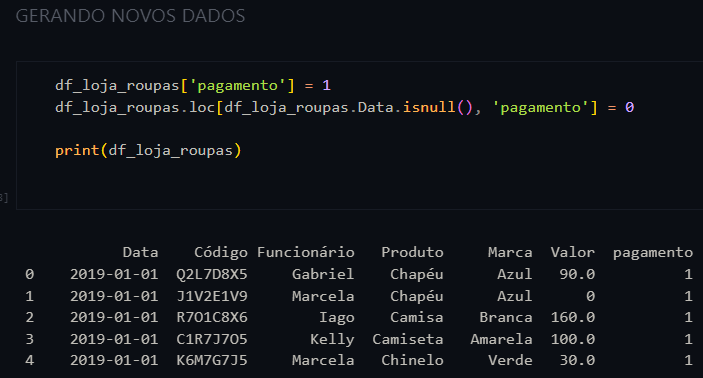
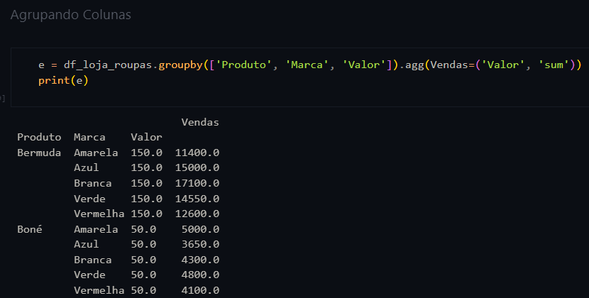

A várias formas de analisar dados, e uma dela é utilizando a linguagem de programação Python junto com a biblioteca Pandas. O conhecimento obtido para analisar dados, veio dos cursos online, "Curso de Python 3 do básico ao avançado" e "Análise de dados com Python e Machine Learning" e pelo livro, "Análise Exploratória de Dados com Python, Pandas e Numpy".
Análise de Dados

A Pré-Análise é uma forma de visualizar os dados com mais detalhe e precisão. Dito isso, o código envolvendo o comando isnull(), serve como uma procura de valores nulos que o Python procura na tabela, e o comando describe() traz mais detalhes como o máximo, mínimo e média dos valores que estão na tabela. E o último comando, boxplot(), mostra os dados numéricos por meio de um gráfico.

Encontrando dados nulos na Pré-Analise, é possível substituir esses dados nulos por dados que agrega valor, para isso é utilizado o comando loc[] para selecionar a linha e coluna especifica.

É possível encontrar valores duplicados que modifica o resultado final da análise, para identificar essa duplicidade, é utilizado o comando duplicated(), que vai percorrer a coluna selecionada na procura de informação iguais na mesma coluna.

A mudança no formato da data, serve para facilitar o reconhecimento do Python no momento de gerar o resultado que envolve um acontecimento em uma data específica.

Com a coluna valor, é possível gera a coluna pagamento, com resultados 0, que nao teve nenhum pagamento e valor 1, indicando que ouvi pagamento, assim fica mais fácil de contar quantos pagamento foram realizados.

Através de um conjunto de dados, é possível criar informações que facilita a tomada de decisão. Por Exemplo, a união da coluna Produto, Marca e Valor, pode resultar na coluna Vendas, que por sua vez, mostra qual conjunto de produto e marca foi mais vendido.